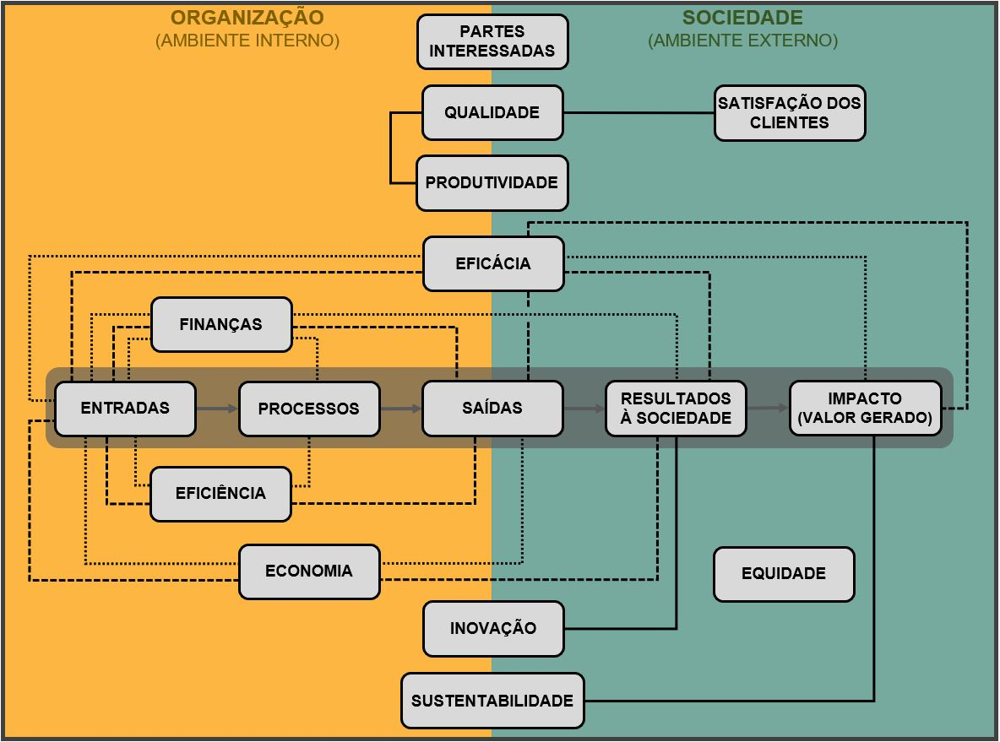

5 Dimensões de medição de desempenho no setor público
Nesta subseção, tem-se um dos mais importantes elementos de um Sistema de Medição de Desempenho, especialmente no setor público: as dimensões de medição de desempenho.
Dimensões de desempenho são as diferentes perspectivas consideradas na medição de um objeto; devido à complexidade do setor público, são necessárias múltiplas dimensões de desempenho para capturar as atividades e resultados dessas organizações (Christensen; James, 2020). A pesquisa citada anteriormente, identificou as dimensões priorizadas pelo setor público em seus SMD, apresentadas a seguir em grupos de características comuns.
5.1 Dimensões relacionadas à cadeia produtiva
Conforme a descrição desse grupo de dimensões, verifica-se que elas se relacionam linearmente, compondo uma linha de produção: entradas, processos e saídas; os resultados gerados pelas saídas e após estes, os impactos desses resultados na sociedade.
As dimensões entradas (insumos) e processos pertencem ao ambiente organizacional, sendo assim, de fácil medição e controle. As saídas desses processos ocorrem no curto prazo e estão na fronteira entre os ambientes interno e externo.
As dimensões resultados gerados à sociedade e seus impactos pertencem ao ambiente externo; a primeira provém dos resultados provocados pelas saídas produzidas (ocorrem no curto e médio prazo), cuja medição ocorre com certa dificuldade. A última é proveniente das mudanças efetivamente ocorridas após os resultados gerados, logo, ocorrem no longo prazo, sendo de mais difícil medição. A figura abaixo relaciona as dimensões citadas e seus ambientes.

A partir do modelo apresentado na figura acima e as explicações anteriores, Brasil (2018b) resume que os indicadores a serem gerados serão proporcionalmente mais complexos conforme sua distância da origem das dimensões do modelo da linha de produção, que se inicia com as entradas (insumos) e finaliza com os impactos gerados na sociedade.
Como exemplos, pode-se avaliar o emprego da dimensão entradas (ou insumos) para se mesurar a quantidade de recursos humanos em um hospital público, ou então, medir a quantidade de profissionais da saúde disponíveis por dia (saídas) nesse mesmo hospital. Por fim, pode-se medir a quantidade de profissionais disponíveis ao dia em função da quantidade total de profissionais existentes nesse hospital; nesse caso tem-se uma medição enriquecida que elevará o nível de informação gerada, subsidiando com mais qualidade a posterior tomada de decisão.
Dessa forma, o último exemplo acima aponta para a importância de dimensões que envolvam duas ou mais grandezas ou até dimensões. Portanto, na sequência, tem-se outras dimensões de medição de desempenho, que podem ou não se relacionar com as dimensões já apresentadas.
5.2 Dimensões que relacionam duas ou mais grandezas
Quanto às dimensões de desempenho deste grupo, estudos como os de Stroobants e Bouckaert (2013) sugerem combinações entre elas e as dimensões anteriores na composição de indicadores de desempenho. Como citado, essas dimensões estão ligadas às diversas etapas dos processos produtivos, seus resultados e impactos e especialmente as combinações entre eles.
Alguns autores utilizam a dimensão efetividade, que mede a relação entre outras dimensões, sendo uma delas necessariamente os impactos gerados; outros (como este guia) representam essa relação por meio da dimensão eficácia (que abrange diversas outras relações). A nomenclatura da relação medida pode variar, mas a sua definição deve estar explicitamente apresentada no SMD projetado.
Dimensões de desempenho que envolvem a relação entre duas outras (como eficiência, eficácia, produtividade, economia etc.), devem ser claramente explicadas no SMD.
As dimensões abaixo relacionam-se diretamente com o ambiente externo, onde ocorre a prestação dos serviços à sociedade.
5.3 Dimensões exclusivamente de ambiente externo
A equidade, ela pode ser avaliada pela comparação entre a qualidade dos serviços prestados a diferentes grupos ou regiões (Shin, 1981) ou por meio de comparações entre a eficiência medida: áreas ou unidades do setor público ineficientes indicam uma distribuição desigual de seus serviços (Smith; Street, 2005). Jones e Rowlinson (2009) propõem considerar as diversas medições dos resultados gerados à sociedade na avaliação da igualdade da distribuição desses serviços aos clientes-cidadãos.
Quanto à satisfação dos cientes, Conroy (2001) alerta que, na maioria dos casos, ela reflete as expectativas da sociedade em relação a um serviço ou organização e não desempenho destes. Toledo et al., (2012) registram que indicadores dessa dimensão precisam refletir a organização e os seus esforços para agregar valor ao cliente; como exemplo não exclusivo do setor público citam indicadores de insatisfação dos clientes.
Verifica-se que a medição da satisfação dos clientes e da equidade na prestação dos serviços deslocam o foco da avaliação do desempenho organizacional para o cenário externo, onde está a necessidade de atendimento das demandas da sociedade, demandas que são a razão de ser da administração pública (Matias-Pereira, 2018; Di Pietro, 2020).
Por fim, tem-se as dimensões amplas, que consideram a medição do desempenho tanto no ambiente interno quanto no externo, apresentadas a seguir.
5.4 Dimensões que abrangem os ambientes interno e externo
Como exemplos de emprego da dimensão qualidade, internamente, pode-se medir falhas e desperdícios, denominados como custos de qualidade, a fim de se avaliar a eficiência e subsidiar análises financeiras, que permitirão identificar programas custosos, esses podem ser descontinuados ou reformulados (Navaratnam, 1993). No cenário externo, ferramentas como o SERVQUAL, avaliam a expectativa dos clientes em relação a um serviço com aquele que foi efetivamente prestado (McKoy, 2009). Para Smith e Street (2005) variações na eficiência podem revelar uma alteração na qualidade da prestação dos serviços públicos. Em relação à dimensão inovação, estudos a exemplificam na medição de desempenho organizacional por meio da taxa de abertura de serviços públicos digitais (Stroobants; Bouckaert, 2013). Quanto à dimensão sustentabilidade, Cloete (2018) a emprega por meio de indicadores de desempenho alinhados com os ODS da ONU.
Por fim, registra-se que os requisitos das partes interessadas, as quais participam da prestação dos serviços que, eventualmente, não foram classificados nas dimensões anteriores precisam ser considerados nos SMD do setor. Conforme Burgman e Roos (2004), uma parte interessada é qualquer ente com capacidade para afetar um resultado importante para uma instituição. Martins et al., (2019) verificaram três grupos de fatores que influenciam no projeto de sistemas de medição de desempenho em instituições públicas e sem fins lucrativos: o propósito da instituição, as partes interessadas e a forma de gestão das instituições. Pesquisas como as de Patrick e French (2011), Cowell et al., (2012) e Melo e Mota (2020) apontam a falha de alguns governos em não considerar os requisitos das partes interessadas no SMD de suas organizações públicas.
5.5 Relações entre as dimensões de medição de desempenho
A figura abaixo apresenta alguns exemplos de relações de causalidade entre as 16 dimensões citadas, demonstrando a possível relação de sinergia entre elas. Assim, um mesmo objeto pode ser medido por meio de diversas dimensões em uma relação de causa e efeito.

Na figura acima, a dimensão eficiência é exemplificada de duas formas: pela relação entre as dimensões saídas e entradas, e, de outra forma, pela relação entre os processos e as entradas. Em outro exemplo, a dimensão eficácia tem como uma de suas possíveis relações a razão entre os resultados gerados à sociedade e as entradas necessárias para tal; como último exemplo, tem-se uma possível relação entre a dimensão qualidade e a satisfação dos clientes.
Entre as vantagens de um Sistema de Medição de Desempenho tem-se não apenas diversas dimensões de medição de desempenho, mas a relação de causalidade entre elas.
Portanto, verifica-se que:
as dimensões de desempenho representam as diversas perspectivas sobre o objeto a ser medido;
essas perspectivas devem trabalhar em sinergia, de forma que o resultado de uma dimensão possa contribuir com outra;
as dimensões pertencentes ao ambiente interno (organização) são de mais fácil medição e controle, situação que se altera até o seu oposto, conforme o avanço para o ambiente externo (sociedade) até a medição dos impactos gerados;
nem todas as dimensões de medição de desempenho precisam ser consideradas, porém, quanto mais abrangente e detalhado for o sistema de medição, maior será o nível de informações, permitindo uma melhor tomada de decisão na organização.
Finalmente, após os fundamentos desta seção, é possível conhecer e detalhar as ferramentas responsáveis pelas medições desejadas - os indicadores de desempenho.